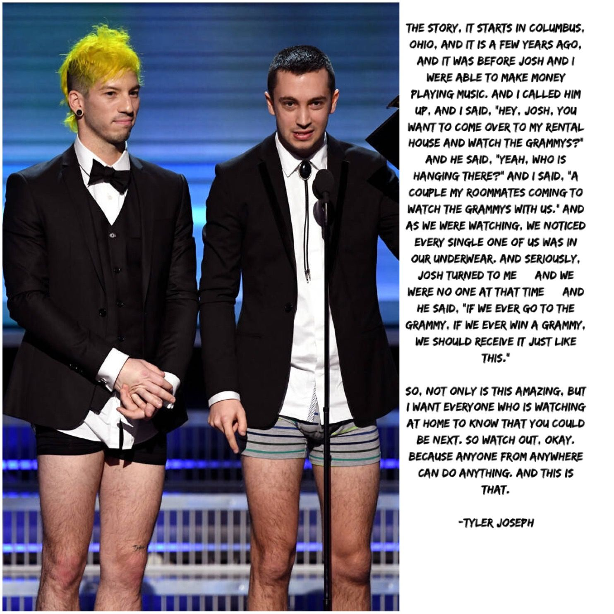

twenty øne piløts is my favorite band
Tyler Joseph and Josh Dun
Twenty One Pilots (stylized in all lowercase or as twenty øne piløts)
is an American musical duo from Columbus, Ohio. The band was formed in
2009 by lead vocalist Tyler Joseph along with Nick Thomas and Chris Salih,
both of whom left in 2011. Since their departure, the line-up has consisted
of Joseph and drummer Josh Dun. The duo is best known for the singles "Stressed
Out", "Ride", and "Heathens". The group received a Grammy Award for Best Pop
Duo/Group Performance at the 59th Annual Grammy Awards. They accepted their
Grammy in their underwear. See story attached to photo below.
The band independently released two albums, Twenty One Pilots (2009) and
Regional at Best (2011), before being signed by record label Fueled by Ramen
in 2012. Their label debut, Vessel, was released in 2013. The duo achieved
breakthrough success with their fourth album, Blurryface (2015), which produced
the successful singles "Stressed Out" and "Ride" and became the first album in
history on which every track received at least a gold certification from the
Recording Industry Association of America. The release of the single "Heathens"
also made the group the first alternative artist to have two concurrent top ten
singles in the United States. The duo's fifth studio album, Trench, was released
on October 5, 2018.

My Blood by twenty one pilots